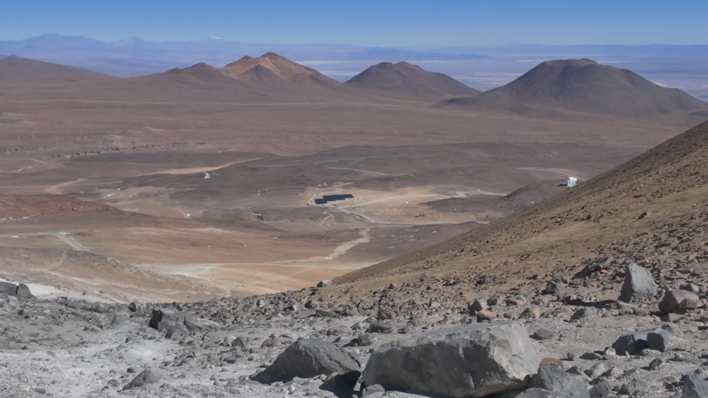
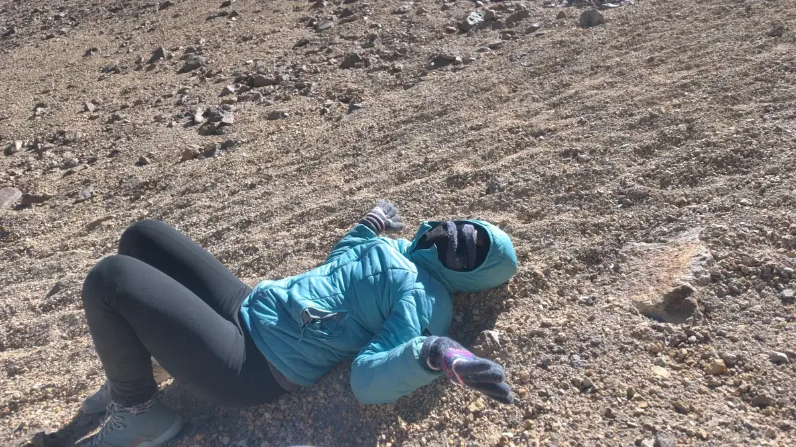
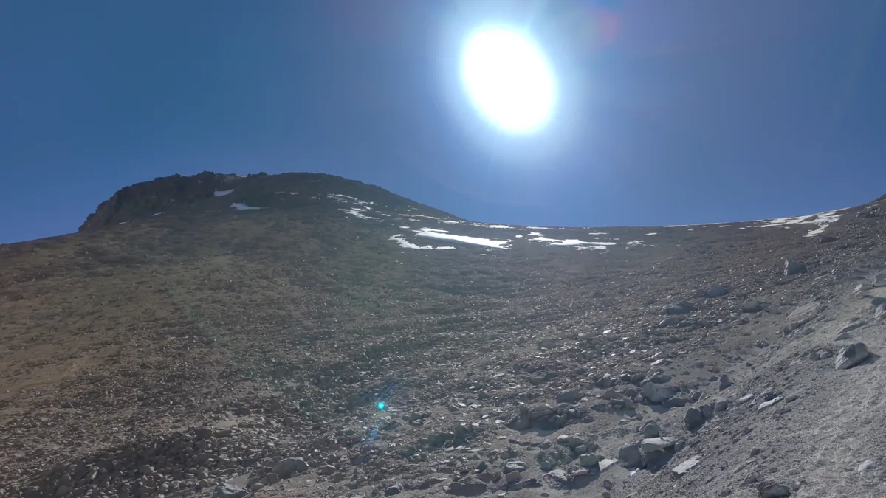

Cerro Toco: como foi tentar subir a pé um vulcão de 5.604 m no Atacama
Nosso carro 4x2 não aguentou a estrada, seguimos a pé e voltamos a uns 400 m do cume. Como foi, o que aprendemos e como se preparar.
Resumo rápido
- Onde
- Altiplano a leste de San Pedro de Atacama, Chile, perto da fronteira com a Bolívia
- Altitude
- Cume a 5.604 m. Estacionamento do início da trilha acima de 5.200 m (nosso altímetro marcou 5.235 m)
- Acesso
- Estrada de terra íngreme e com pedras. Vá de 4x4 ou com agência
- Clima
- Frio, vento forte e gelo no caminho, mesmo com sol
- Nosso resultado
- Voltamos a cerca de 400 m do cume, por segurança
O Cerro Toco é um vulcão de 5.604 m no Deserto do Atacama e uma das subidas mais procuradas por quem está em San Pedro, porque não exige escalada técnica. Mas "não técnica" não quer dizer fácil. A gente foi por conta, com o nosso carro 4x2, e foi a coisa mais difícil que já fizemos em uma viagem. Aqui contamos tudo: onde o carro parou, como é a subida a mais de 5.000 m e por que decidimos voltar perto do cume.
O carro não aguentou
Para chegar ao início da trilha, é preciso subir uma estrada de terra que vai ficando cada vez mais íngreme e cheia de pedras. A gente sabia que o carro era só 4x2 e já tinha planejado deixá-lo onde não desse mais para seguir.
Esse ponto chegou por volta dos 4.800 m: o pneu começou a patinar e paramos no meio da estrada. Ainda faltavam uns 3,5 km até o estacionamento do início da trilha. Pelo app de trilha, no nosso ritmo, ir e voltar a pé dali levaria umas 5 horas, o que era inviável. Então voltamos ao carro, tiramos as pedras maiores do caminho e conseguimos avançar mais um trecho.
No caminho encontramos um guia descendo, que confirmou: dali para frente não dá para seguir com 4x2. Deixamos o carro e caminhamos até o estacionamento usado pelos 4x4, perto de um observatório astronômico. O altímetro marcou 5.235 m.
A subida: três passos e deita
Do estacionamento sai a trilha, que em boa parte é uma escalaminhada: você vai subindo por pedras soltas, num terreno íngreme e sem demarcação muito clara. Tinha gelo em alguns trechos, o vento era fortíssimo e a temperatura caiu a ponto de não dar para tirar a luva, porque a ponta dos dedos corre risco de congelar.

Com o ar rarefeito, cada passo pesa. A gente subia devagar, parava para respirar e, em alguns momentos, deitava no chão. Começou a dor de cabeça da altitude, e o celular passou a descarregar muito mais rápido por causa do frio.
No caminho encontramos um grupo de brasileiros descendo, que contou ter levado cerca de 1h40 para subir. Eles deram um conselho que confirmamos depois: não subestime a descida. O chão é de areia vulcânica e pedras que soltam e escorregam, então descer também é lento.
Por que voltamos a 400 m do cume
Antes de começar, a gente combinou um horário-limite: se não chegasse ao cume até as 15h, voltaria. Quando paramos para descansar, o cume estava logo ali, a uns 400 m, mas no nosso ritmo seriam pelo menos mais uns 40 minutos de subida.
O vento estava aumentando, os dois já sentiam os efeitos da altitude e estávamos sozinhos, sem guia. Se um de nós passasse mal lá em cima, seria difícil descer a tempo. Então decidimos voltar enquanto ainda tinha sol.

E não nos arrependemos. Encaramos o desafio até onde deu, e de lá vimos a paisagem mais bonita das nossas vidas: um mar de vulcões e o altiplano até perder de vista.
Use o AllTrails antes e durante a trilha
A gente usou um app de trilha para acompanhar o percurso, o tempo e a altitude, e foi ele que mostrou que seguir a pé desde onde o carro parou não daria certo. Para o Cerro Toco, recomendamos o AllTrails:
- Antes de ir: busque por "Cerro Toco" e veja o traçado, a distância, o desnível e os comentários recentes de quem fez. Os relatos ajudam a saber como está a estrada e se tem gelo no caminho.
- Baixe o mapa ainda em San Pedro: lá em cima o sinal do celular pode falhar. Mapas offline fazem parte do plano pago do app.
- Durante a trilha: acompanhe no mapa se você está no caminho certo, já que a trilha não é bem demarcada em alguns trechos, e confira a altitude e o tempo até o cume para decidir a hora de voltar.
- Cuide da bateria: o frio descarrega o celular rápido. Guarde o aparelho perto do corpo e leve uma bateria externa.
A gente também levou uma antena de internet via satélite para emergências. Não precisamos, mas, indo sem guia, foi uma tranquilidade a mais.
Dicas para quem vai ao Cerro Toco
- Aclimate antes. Passe alguns dias em San Pedro antes da subida. Na véspera, a gente subiu até uns 4.000 m e fez exercício nas dunas, a cerca de 2.600 m, para o corpo se acostumar.
- Vá de 4x4 ou com agência. Com 4x2, você provavelmente vai ter que andar vários quilômetros a mais, e isso pode inviabilizar o cume.
- Defina um horário-limite e respeite. Saia cedo e combine a hora de voltar, chegando ou não ao cume.
O que levar para o Cerro Toco
No dia em que fomos fazia muito frio lá em cima, ventava demais e a gente estava congelando. Por isso, não economize na mochila:
- Bastante água. Vá se hidratando durante a subida, mesmo sem sede: em altitude o corpo perde água mais rápido.
- Comida leve para ir comendo na trilha: barrinha de cereal, fruta, algo com proteína e alguma coisa salgada.
- Bastão de caminhada, se tiver. Ajuda muito na subida e na descida, que escorrega.
- Tênis ou bota de trilha, com boa aderência para as pedras soltas e a areia vulcânica.
- Roupas leves em camadas e um corta-vento por cima, para tirar e colocar conforme o esforço e o vento.
- Luva, touca e óculos de sol. Leve uma luva que você não precise tirar: com o frio, a ponta dos dedos corre risco de congelar.
O que a gente levaOs itens de trilha e de estrada que a gente usa estão reunidos na nossa lojinha na Shopee.
Ver a lojinha →O que combinar na mesma viagem
Deixe o Cerro Toco para o fim da sua passagem por San Pedro, depois de passeios mais baixos como o Valle de la Luna e o Geysers del Tatio, que já fica acima dos 4.300 m. Se você vem de carro, veja nosso roteiro da Argentina ao Atacama de carro e o guia do Chile.
Seguro viagem com descontoO Chile não exige seguro, mas um atendimento médico em San Pedro sai caro, ainda mais com a altitude. Use o cupom ESTRADAEMDOIS na Real Seguro Viagem. Entenda o que vale para o Chile.
Cotar seguro →Perguntas frequentes
Precisa de carro 4x4 para chegar ao Cerro Toco?
Para chegar ao estacionamento do início da trilha, é o mais indicado. Nosso carro 4x2 patinou na estrada de terra íngreme e cheia de pedras, e um guia que encontramos confirmou que o trecho final não dá para fazer sem 4x4. A alternativa é ir com agência.
Quanto tempo leva a subida do Cerro Toco?
Um grupo de brasileiros que encontramos levou cerca de 1h40 para subir a partir do estacionamento. Para nós, que estávamos sem guia e no nosso ritmo, foi bem mais lento. A descida também exige cuidado, porque o chão de areia vulcânica e pedras solta e escorrega.
Qual a altitude do Cerro Toco?
O cume tem 5.604 m. O estacionamento de onde sai a trilha fica acima dos 5.200 m: nosso altímetro marcou 5.235 m.
Como ver o trajeto da trilha do Cerro Toco?
Use um app de trilhas como o AllTrails: busque por Cerro Toco para ver o percurso, a distância, o desnível e os comentários recentes de quem fez. Baixe o mapa antes de sair de San Pedro, porque lá em cima o sinal do celular pode falhar.
O que levar para subir o Cerro Toco?
Bastante água para ir se hidratando durante a subida, comida leve (barrinha de cereal, fruta, proteína e algo salgado), bastão de caminhada, tênis ou bota de trilha, roupas leves em camadas com corta-vento, luva, touca e óculos de sol. No dia em que fomos, fazia muito frio e ventava demais lá em cima.

Andressa e Guilherme
Casal por trás do Estrada em Dois. Viajamos de carro pelo Brasil, Argentina e Chile e mostramos tudo no YouTube.